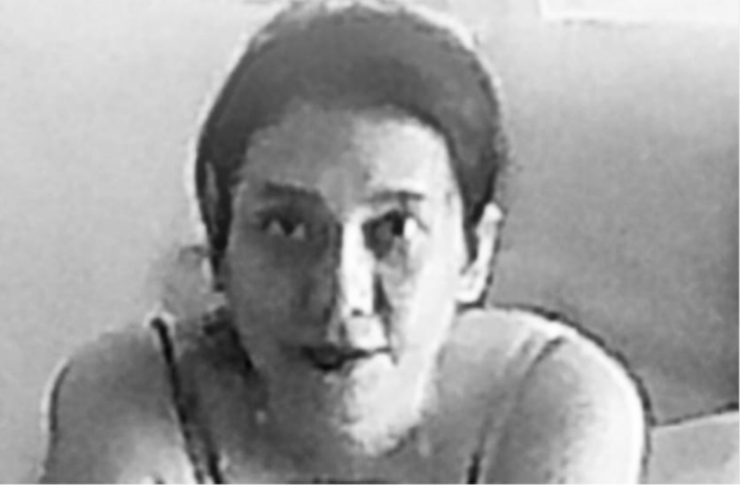

 Anie Lahir di Jambi, besar di Biak Papua, Banjarmasin Kalimantan Selatan dan Bali. Belajar seni decoupage secara otodidak sejak tahun 2019 awal dan mulai produksi di pertengahan tahun 2019. Kerajinan yang ditekuni baru sebatas clutch pandan. Sampai saat ini belum berminat untuk berjualan secara online. Jika ingin memiliki produk Madam Anie Decoupage dapat menghubungi no Hp 082144389034.